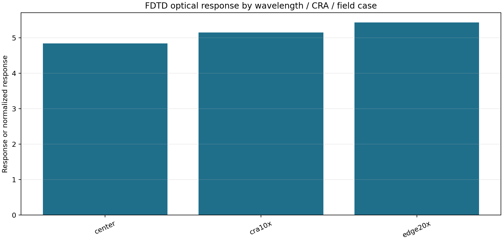
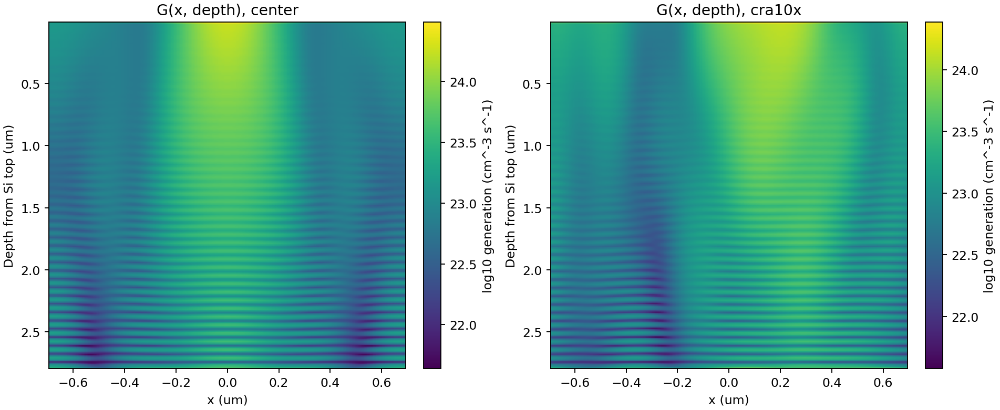
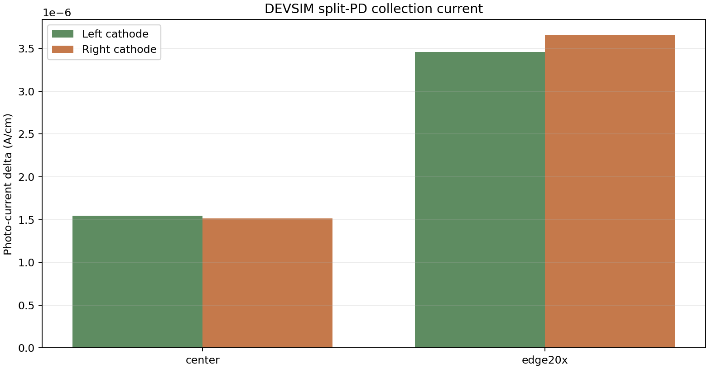
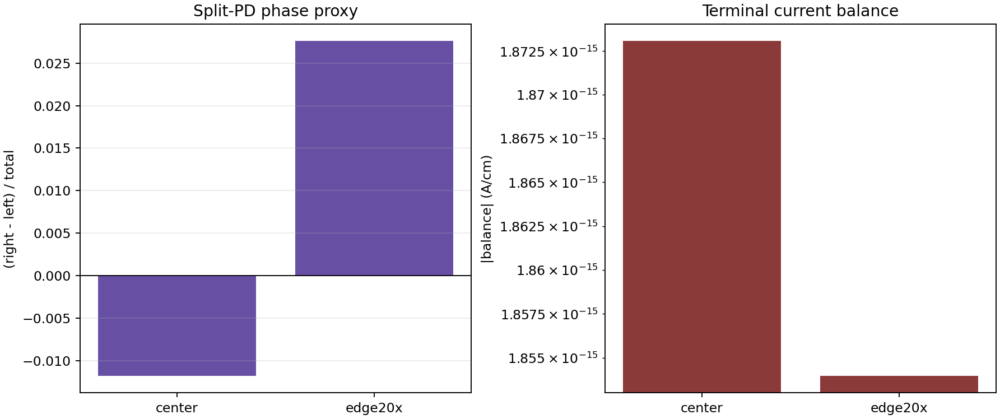

OI photons -> FDTD optical absorption LUT -> DEVSIM TCAD collection LUT -> pyisetcam sensor electrons/volts -> IP
| Parameter / effect | How it enters CameraE2E | Current implementation detail | Status |
|---|---|---|---|
| RI / n,k | Upstream FDTD generation only | The refractive-index stack is consumed by Meep when building the LUT. CameraE2E does not solve RI/FDTD per frame; it consumes the resulting optical-response LUT. | Metadata + indirect response |
| QE / spectral response | Image-affecting when FDTD mode includes qe | fdtd_sensor_qe_scale(...) multiplies sensor spectral QE before photon-to-current integration. | Implemented |
| CRA / field shading | Image-affecting when FDTD mode includes field | fdtd_sensor_field_response_map(...) applies center-to-edge response after spatial integration. | Implemented |
| Optical crosstalk | Image-affecting when FDTD mode includes crosstalk | fdtd_sensor_lut_crosstalk_kernel(...) applies a regional-response convolution. Current smoke LUT is a proxy, not product crosstalk PSF. | Implemented as proxy |
| G(x, depth) | DEVSIM input and report evidence | FDTD-derived generation map is loaded and visualized; DEVSIM summaries are generated from it. CameraE2E does not integrate G(x,depth) per pixel directly. | Report + DB source |
| Collection efficiency | Image-affecting when TCAD hook is attached | tcad_sensor_apply_collection_response(...) scales signal current/electron rate by DEVSIM total photo-current relative to center. | Implemented |
| Split-PD phase | Metadata/report only in v1 | DEVSIM left/right current imbalance is loaded and reported. It is not yet used by autofocus/PDAF logic. | Metadata |
| Noise / dark current / lag / full-well | Not image-affecting from DEVSIM in v1 | CameraE2E still uses existing sensor noise fields. DEVSIM dark current and terminal balance are evidence only until calibrated electrical hooks are added. | Future calibrated hook |
| Artifact | Path / Value |
|---|---|
| FDTD LUT | /Users/seongcheoljeong/FDTD/runs/convergence_cra3_rgb_r84_gridsnap_quant/camera_lut.json |
| Generation map | /Users/seongcheoljeong/FDTD/runs/convergence_cra3_rgb_r84_gridsnap_quant/tcad_generation_map_2d.npz |
| DEVSIM summaries | /Users/seongcheoljeong/FDTD/runs/devsim_split_pd_2d_fdtd_map_proxy_center_smoke/summary.json, /Users/seongcheoljeong/FDTD/runs/devsim_split_pd_2d_fdtd_map_proxy_edge20x_smoke/summary.json |
| Accuracy gate | /Users/seongcheoljeong/FDTD/runs/tcad_accuracy_gate_reference_profile/tcad_accuracy_gate.json |
| Summary JSON | /Users/seongcheoljeong/Documents/CameraE2E/reports/fdtd_sensor/fdtd_tcad_sensor_summary.json |
| Warning |
|---|
| /Users/seongcheoljeong/FDTD/runs/devsim_split_pd_2d_fdtd_map_proxy_center_smoke/summary.json was generated from /Users/seongcheoljeong/FDTD/runs/fdtd_to_tcad_generation_2d_cra_smoke/tcad_generation_map_2d.npz, not the selected generation map /Users/seongcheoljeong/FDTD/runs/convergence_cra3_rgb_r84_gridsnap_quant/tcad_generation_map_2d.npz |
| /Users/seongcheoljeong/FDTD/runs/devsim_split_pd_2d_fdtd_map_proxy_center_smoke/summary.json uses proxy electrical model proxy-pinned-split-pd |
| /Users/seongcheoljeong/FDTD/runs/devsim_split_pd_2d_fdtd_map_proxy_edge20x_smoke/summary.json was generated from /Users/seongcheoljeong/FDTD/runs/fdtd_to_tcad_generation_2d_cra_smoke/tcad_generation_map_2d.npz, not the selected generation map /Users/seongcheoljeong/FDTD/runs/convergence_cra3_rgb_r84_gridsnap_quant/tcad_generation_map_2d.npz |
| /Users/seongcheoljeong/FDTD/runs/devsim_split_pd_2d_fdtd_map_proxy_edge20x_smoke/summary.json uses proxy electrical model proxy-pinned-split-pd |
| TCAD accuracy gate is not ready; treat outputs as proxy simulation |
| edge20x response exceeds bare cos^4 by >20%; this can be valid with microlens/OCL concentration but needs calibration evidence |
| cra10x response exceeds bare cos^4 by >20%; this can be valid with microlens/OCL concentration but needs calibration evidence |
| edge20x response exceeds bare cos^4 by >20%; this can be valid with microlens/OCL concentration but needs calibration evidence |
| cra10x response exceeds bare cos^4 by >20%; this can be valid with microlens/OCL concentration but needs calibration evidence |
| edge20x response exceeds bare cos^4 by >20%; this can be valid with microlens/OCL concentration but needs calibration evidence |
| no uncompensated/compensated OCL pair available |
| no +/- CRA mirror pairs available for symmetry validation |
| no regional crosstalk kernel available |
| FDTD report is grid-qualified but not full resolution/time/PML convergence |
FDTD remains the optical layer. It contributes wavelength/QE proxy response, CRA/relative-illumination behavior, OCL shift behavior, and regional-response/crosstalk proxy data.
| FDTD optical item | Evidence |
|---|---|
| Schema / mode | camera_supercell_optical_lut_v2 / split-pd-1x1 |
| Wavelength / QE proxy samples | [450.0, 550.0, 650.0] |
| CRA / relative illumination check | warn |
| OCL shift check | warn |
| FDTD physics status | warn |

The DEVSIM input is the FDTD-derived G(x, depth) generation map. This preserves lateral and depth-dependent absorption before electrical collection.

DEVSIM summaries provide left/right cathode photo-current deltas, split-PD phase proxy, and terminal current-balance checks.


| Check | Status | Accuracy Blocking | Details |
|---|---|---|---|
| profile_load | PASS | False | measured_tcad_profile_v1 loaded and schema validation passed. |
| profile_calibration_status | FAIL | True | Profile is marked reference/proxy, so it must not be used as a product accuracy LUT. |
| reference_mode | FAIL | True | reference_mode=true keeps public anchors and stable defaults for exploration only. |
| implant_sources_measured | FAIL | True | One or more implant profiles are unmeasured reference/analytic profiles. |
| transfer_gate_proxy_present | PASS | False | Transfer-gate barrier feature is present in the profile. |
| floating_diffusion_proxy_present | PASS | False | Floating-diffusion doping feature is present in the profile. |
| dti_geometry_present | PASS | False | DTI/liner geometry proxy is present. |
| bdti_geometry_present | PASS | False | BDTI geometry is present. |
| fixed_charge_applied | PASS | False | At least one fixed/effective interface charge term is executable. |
| interface_trap_density_declared | INFO | False | Interface trap density is supplied; solver implementation is checked from DEVSIM summaries. |
| mobility_recombination_calibrated | FAIL | True | Doping-dependent transport is configured, but it is still reference/unmeasured and lacks target-sensor calibration. |
| split_devsim_profile_model | PASS | False | All split-PD summaries used electrical_model=profile-ppd. |
| optical_generation_map_imported | PASS | False | All split-PD summaries used imported Meep G(x,depth). |
| transport_models_applied | PASS | False | DEVSIM split summaries used doping-dependent mobility/lifetime models in the solver path. |
| field_dependent_mobility_applied | PASS | False | DEVSIM split summaries include field-dependent effective edge mobility for velocity saturation. |
| terminal_current_balance | PASS | False | Illuminated terminal-current balance is within 1e-09 A/cm. |
| profile_features_applied_to_netdoping | PASS | False | Executable TG, FD, BDTI, and fixed-charge feature masks are present; nonzero-effect counts show runtime-disabled roles such as FD scale=0 for PD-only response sweeps. |
| interface_trap_occupancy_equations | PASS | False | DEVSIM summaries include potential-dependent interface-trap charge and SRH sheet recombination proxies. |
| metadata_only_electrical_terms | PASS | False | No metadata-only electrical terms were reported by the supplied split summaries. |
| gmsh_contacts_imported | PASS | False | Gmsh import summaries contain silicon and all three contacts. |
| gmsh_dimensions_smoked | PASS | False | Both 2D and 3D Gmsh import smoke solves were supplied. |
| resolved_dti_oxide_solver_path | PASS | False | Resolved side DTI/BDTI oxide regions and Si/oxide interface were exported to Gmsh and solved by DEVSIM. |
| fdtd_convergence_report | FAIL | True | FDTD grid/convergence report is partial; full resolution, time, and PML coverage has not all passed for accuracy use. |
| fdtd_crosstalk_xsection_convergence | PASS | False | High-resolution 2D FDTD crosstalk x-section convergence passed for configured split/OCL cases. |
| native_devsim_response_convergence | PASS | False | Native DEVSIM direct response passed mesh-refinement convergence. |
| signed_field_symmetry_validation | PASS | False | Signed field LUT was validated against direct negative-CRA FDTD/native-DEVSIM anchors. |
| camera_lut_spectral_coverage | PASS | False | Camera-system field LUT covers the required RGB wavelength anchors on a uniform signed field grid. |
| camera_system_field_lut_direct_z_diag_coverage | PASS | False | Dense field LUT uses direct RGB x-axis, z-axis, and diagonal native-DEVSIM anchors without radial fallback. |
| tg_fd_terminal_diagnostic | PASS | False | TG/FD diagnostic has a real floating-diffusion terminal, finite FD response rows, and terminal balance closure. |
| tg_fd_transient_diagnostic | PASS | False | TG/FD diagnostic uses paired photo-minus-dark DEVSIM transient time stepping and reports carrier inventory. |
| tg_fd_transfer_inventory_effect | PASS | False | Carrier inventory shows photo-generated electrons leaving the PD region and FD terminal integration collects positive electron charge. |
| tg_fd_transfer_settling | PASS | False | FD terminal photo-minus-dark current decays below 10% of its peak by the end of the transfer pulse. |
| calibration_result | PASS | False | Calibration optimizer reported success. |
| calibration_targets_measured | FAIL | True | Calibration targets are missing target_source=measured or are explicitly synthetic. |
| calibration_target_residuals | PASS | False | Best calibration entry passes per-target current and split residual tolerances. |
| transport_runtime_calibration_controls | PASS | False | Runtime mobility, lifetime, fixed-charge, and interface-trap calibration controls are wired into DEVSIM summaries. |
| transport_multi_parameter_calibration | PASS | False | Multi-parameter calibration report passes current/split and metric residual checks. |
| measured_optical_stack_nk | FAIL | True | Optical stack evidence exists, but geometry and/or material n,k are not marked measured. |
| devsim_weighting_laplace_summary | PASS | False | DEVSIM-native pure-Laplace terminal weighting summary is internally consistent. |
| devsim_weighting_csv | PASS | False | DEVSIM weighting CSV row count and required columns are valid. |
| devsim_weighting_mesh_matches_split_runs | INFO | False | DEVSIM weighting node count does not match one or more split-PD runs, but the supplied primary response manifest is native_devsim-only; the weighting surrogate mesh is not used by this direct terminal-current LUT. |
| native_devsim_direct_method_present | PASS | False | Camera diagnostic includes native_devsim direct FDTD-generation DEVSIM responses. |
| native_devsim_direct_cases_present | PASS | False | Every camera-system case has finite native DEVSIM terminal-current response and split phase. |
| camera_system_research_lut_native_export | PASS | False | Camera-system research LUT is exported from native_devsim direct responses. |
| camera_system_research_lut_numerical_convergence | PASS | False | Research LUT embeds a passing optical numerical-convergence report. |
| camera_system_research_lut_full_numerical_coverage | FAIL | True | Research LUT optical convergence is partial; one or more of resolution, time, or PML axes were not varied. |
| camera_system_research_lut_optical_grid_evidence | PASS | False | Research LUT includes per-case FDTD optical grid evidence and every case passes the configured grid-resolution gate. |
| gw_manifest_weighting_methods | INFO | False | Native-only research LUT manifest supplied; G*W surrogate weighting is not part of this direct terminal-current export. |
| gw_devsim_dd_probe_method_present | INFO | False | Native-only research LUT uses direct DEVSIM terminal-current deltas; sparse DD-probe surrogate is optional and not required for this export. |